CS184/284A Fall 2026 Homework 3 Write-Up
Home
GitHub Repo
Overview
Give a high-level overview of what you implemented in this homework. Think about what you've built as a whole. Share your thoughts on what interesting things you've learned from completing the homework.Part 1: Ray Generation and Scene Intersection
Ray Generation and Primitive IntersectionRendering starts per pixel.
raytrace_pixel draws ns_aa random points inside the pixel and normalizes each to
\([0,1] ^2\) by the image width and height. Camera::generate_ray maps that point onto a virtual sensor on the
\(z = -1\) plane in camera space, whose half-extents are \(tan(\frac{hFov}{2})\) and \(tan(\frac{vFov}{2})\). The direction from the
camera origin to that point is rotated into world space by c2w and normalized. The ray's origin is pos, and
min_t/max_t are set to the near and far clip planes.
Each ray is then tested against the scene's primitives (triangles and spheres). A hit must have t within [min_t,
max_t]. On a hit, max_t shrinks to that t, so farther hits are rejected and the nearest one survives.
The hit's t, normal, primitive, and BSDF are stored in Intersection. The radiance estimates from all samples are
averaged to get the pixel color.
Triangle Intersection
I used the Moller-Trumbore algorithm. A hit point is both on the ray, \( o + t \cdot d \), and on the triangle, written in barycentric form as \( (1 - b_1 - b_2)p_1 + b_1 p_2 + b_2 p_3 \). Setting these equal gives a \( 3 \times 3 \)linear system in \(t, b_1, b_2), which Cramer's rule solves with a few cross and dot products. If the determinant is near zero, the ray is parallel to the triangle's plane and misses. Otherwise, the hit is valid if all three barycentric coordinates are non-negative (inside the triangle) and t lies within [
min_t, max_t]. The surface normal is interpolated from the vertex normals using the barycentric coordinates.

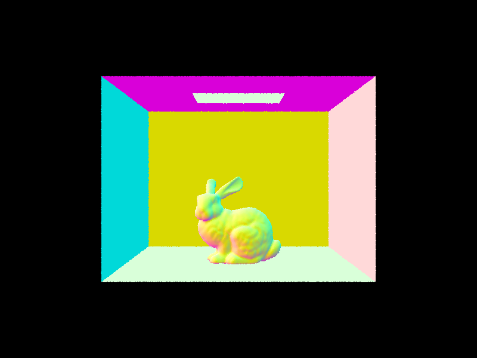
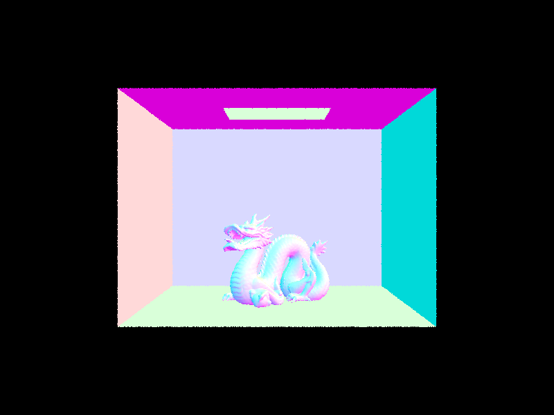
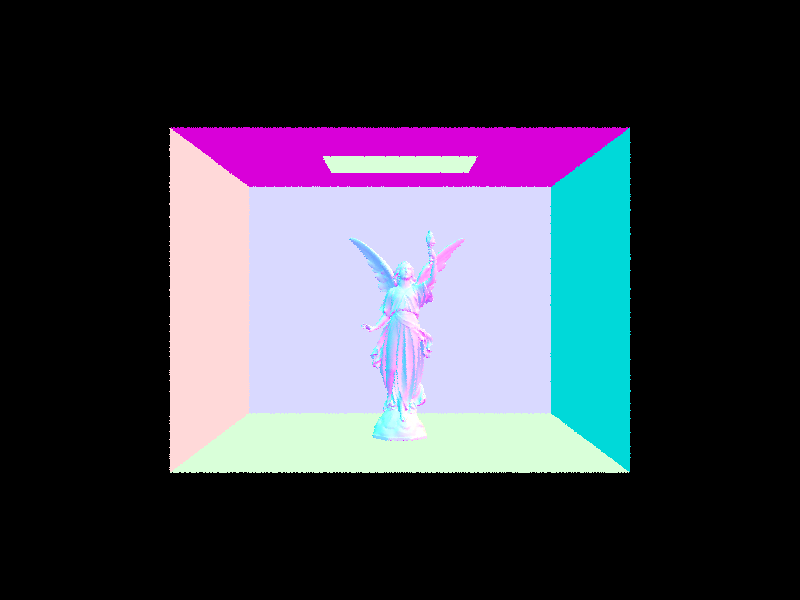
Part 2: Bounding Volume Hierarchy
BVH Constructionconstruct_bvh builds the tree recursively over a range of the primitive vector, given by start and end
iterators. For each range, I compute two boxes: the bounding box of all the primitives, which becomes the node's bb,
and a second box that bounds the primitives' centroids. If the range has at most max_leaf_size primitives, the node becomes
a leaf that keeps the start and end iterators. Because every child works on a sub-range of the same vector,
no primitives are copied.
Otherwise, I split the range. For the heuristic, I pick the axis along which the centroid box is longest, and I put the split point at the midpoint of the centroid range on that axis.
std::partition then reorders the range in place so that primitives whose centroid
lies below the split come first. The left child gets [start, mid) and the right child gets [mid, end).
Splitting along the most spread-out axis tends to produce two children that overlap little and have tight boxes, so a ray can often skip one
of them entirely. Using centroids instead of the primitives' own extents means each primitive goes to exactly one side, even if it is large
and straddles the split plane. If every primitive ends up on one side (for example, when all centroids coincide), the recursion would receive
the same range again and never terminate. In that case I fall back to splitting the range in half by count with std::nth_element
along the same axis, which guarantees both children are strictly smaller.
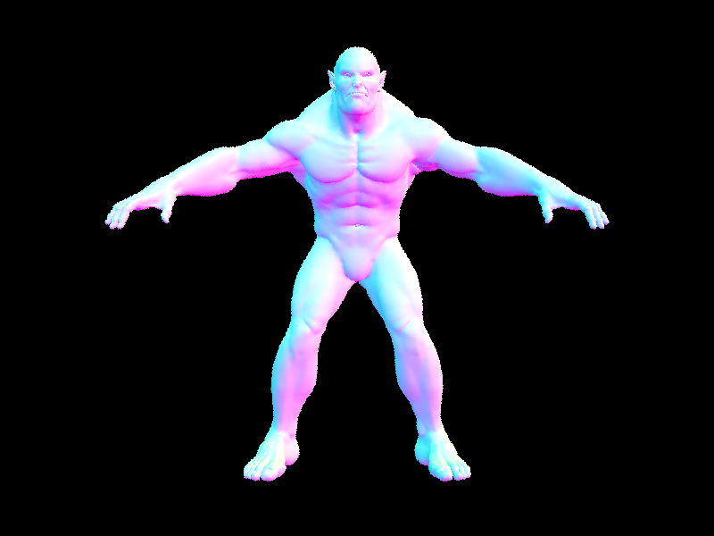
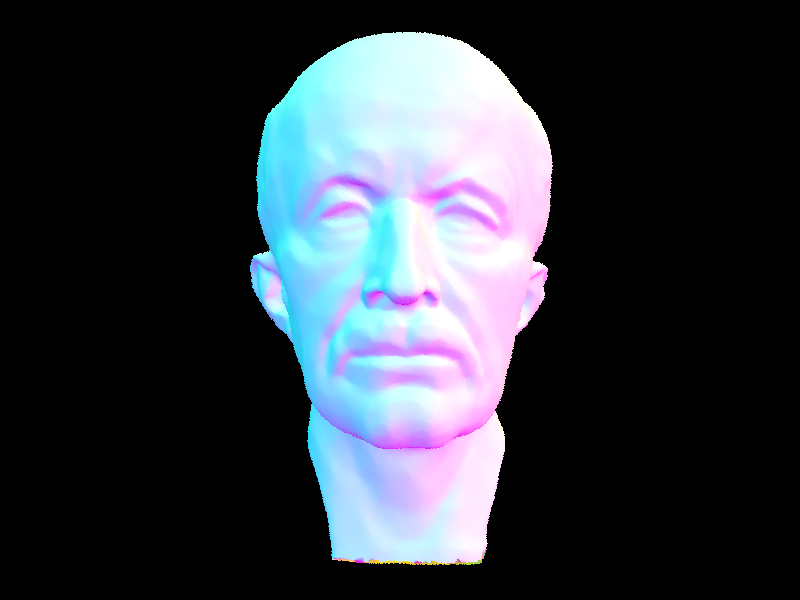
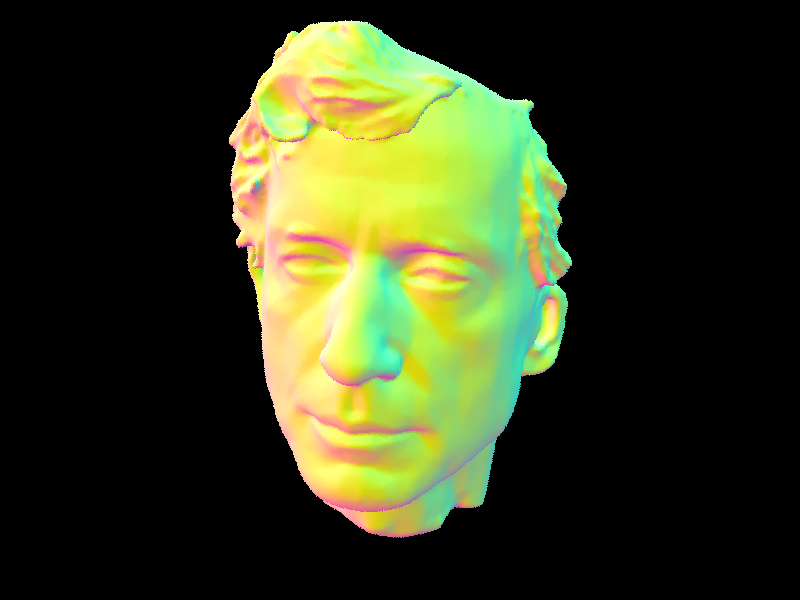
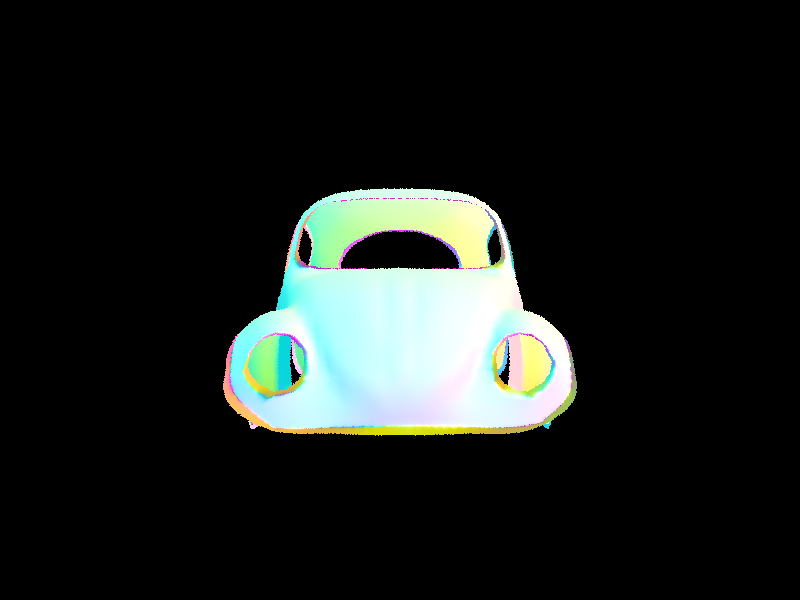
Rendering Time With and Without BVH
| Scene | Without BVH (s) | With BVH (s) |
|---|---|---|
| Teapot | 15.7525 | 0.1078 |
| Cow | 39.2701 | 0.1177 |
| Beetle | 48.0160 | 0.1011 |
| Peter | 298.7554 | 0.1092 |
| Max Planck | 385.7859 | 0.1294 |
| Beast | 449.8192 | 0.1106 |
Without acceleration, every ray is tested against every primitive, so render time grows roughly linearly with triangle count: the small teapot takes about 16 seconds, while the large Beast takes about 450 seconds. With the BVH, every scene renders in roughly 0.1 seconds regardless of size, a speedup between about 150× (teapot) and over 4,000× (Beast). A ray only descends into boxes it actually hits, so the work per ray grows closer to logarithmically with the number of primitives than linearly. This also means the benefit grows with scene complexity, because the brute-force cost climbs with triangle count while the BVH cost barely moves. The BVH does add a one-time construction cost, but it is small next to the savings here. Without the BVH, scenes like Beast and Max Planck are practically unusable.
Part 3: Direct Illumination
Both functions estimate the reflection equation at the hit point, \( L_o(\omega_0) = \int L_i(\omega_i) f(\omega_o, \omega_i) cos(\theta_i) d\omega_i \), using a Monte Carlo sum of \( L_i \cdot f \cdot \frac{cos(\theta)}{pdf} \). Both build a local frame at the hit point with the surface normal as +z (o2w and its transpose w2o). They compute w_out in that local frame, and use local-space directions for
the BSDF and cosine, but world-space directions for casting rays.
Uniform hemisphere sampling (
estimate_direct_lighting_hemisphere): I draw num_samples directions uniformly
on the local hemisphere, so the pdf is \( \frac{1}{2\pi}\).For each, I cast a ray from the hit point in the world-space direction with
min_t = EPS_F to avoid hitting the surface I started on. If the ray hits something, I read that object's emission, which is
zero unless it is a light. The sample adds \( emission \cdot f \cdot cos(\theta) / pdf \). The sum is divided by the number of samples. Most
random directions miss the light, so few samples contribute anything.
Light (importance) sampling (
estimate_direct_lighting_importance): I loop over every light and ask it for a sample with
sample_L, which returns the radiance, a world-space direction to the light, the distance, and the pdf. If the direction points
below the surface (\( cos(\theta) \le 0 \)), it is skipped. Otherwise I cast a shadow ray from the hit point with min_t = EPS_F
and max_t = distToLight − EPS_F, so that it can only be blocked by something between the point and the light. If it is
not blocked, the sample adds \( radiance \cdot f \cdot cos(\theta) / pdf \). Area lights take ns_area_light samples, averaged,
while point lights are sampled once since every sample would be identical. Because every sample is aimed at the light, none are wasted, and
point lights, which hemisphere sampling can never hit, also work.
Hemisphere vs. Light Sampling
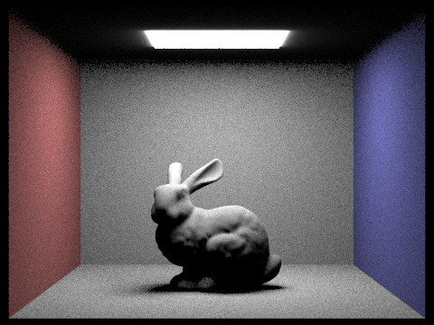
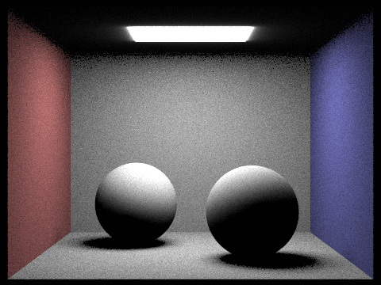
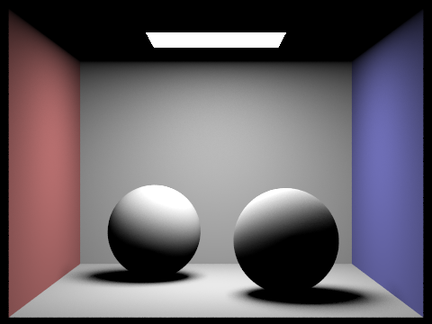
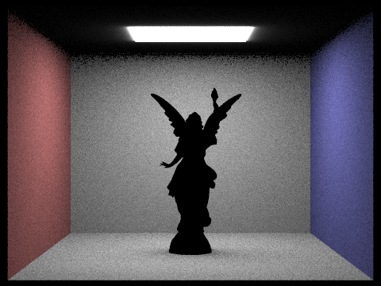
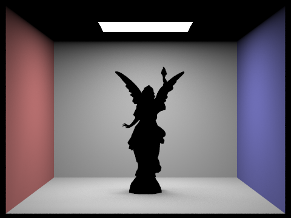
Noise vs. Number of Light Rays
The soft shadow under the bunny and along the floor is where the noise shows up, because those points see only part of the area light. With 1 light ray, each pixel takes a single random point on the light and either sees it or not, so the penumbra is grainy. Each increase in
-l averages more light samples per hit point, so the grain shrinks and the penumbra turns into a smooth gradient.
The variance falls roughly in proportion to \( \frac{1}{L}\), so the noise amplitude falls roughly with the square root.
By 64 light rays the shadow is nearly smooth. Regions fully lit or fully in shadow look clean at every setting, since all samples agree there.
While both estimators will converge to the same image (as they are unbiased estimates of the same integral), light sampling converges much faster. Hemisphere sampling picks directions without knowing where the light is, so for a small area light most samples miss and contribute zero, and the few that hit have large weights (dividing by \( \frac{1}{2\pi} \)). This gives us grainy results, especially in soft shadows, and the noise doesn't significantly decrease with sample count. In contrast, light sampling aims every sample at the light, so the only 'randomness' is the position on the light and whether it is occluded. At the same sample counts the images are much cleaner and the soft shadows are smooth. Light sampling can also handle point lights, which hemisphere sampling cannot, since a random direction never hits a single point. The tradeoff is that light sampling needs the scene's lights to be known and sampleable, while hemisphere sampling works for any emitter that a ray can hit.
Part 4: Global Illumination
at_least_one_bounce_radiance returns the light arriving at a hit point after one or more bounces. A ray's depth field
counts the bounces taken so far (camera rays are 0), so direct lighting at a hit with depth d is bounce d+1. At each hit I first
add one_bounce_radiance, the direct lighting from Part 3. Then, if d+1 has reached max_ray_depth, I stop.
Otherwise I take one sample of the BSDF with sample_f, which gives an incoming direction, the BSDF value, and the pdf. I trace
a new ray in that direction (min_t = EPS_F, depth + 1). If it hits something, I call the function recursively on
the new hit and weight the result by \(f \cdot cos(\theta) / pdf \), the same Monte Carlo estimator as before. If it misses, nothing is added.
Emission is counted only once, in the zero-bounce term in est_radiance_global_illumination, so lights reached through bounces
are not counted twice. When isAccumBounces is false, only the last allowed bounce adds its direct lighting, so the output is
exactly the mth bounce.
Russian roulette: to avoid always tracing up to
max_ray_depth, a path that has already taken its first indirect bounce continues with probability 0.65 (termination probability 0.35). When it continues, the recursive contribution is divided by 0.65, so the expected value is unchanged and the result is unbiased. The first indirect bounce is always traced, as required, and max_ray_depth still serves as a hard cap.
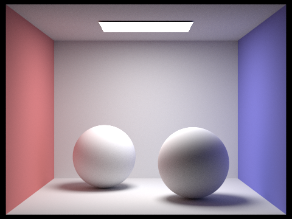
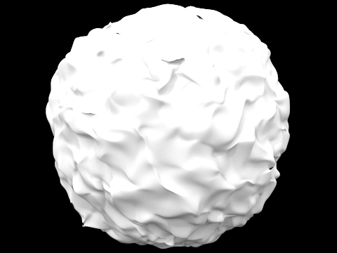
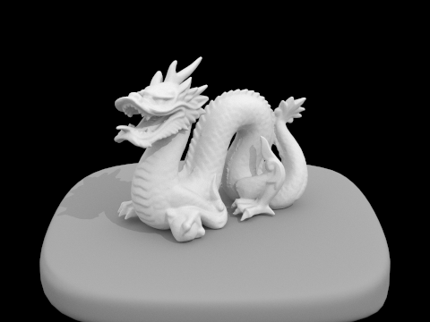
Direct Only vs. Indirect Only
1024 samples per pixel. The direct image contains the light's emission plus first-bounce direct lighting. The indirect image contains only light that has bounced at least twice.
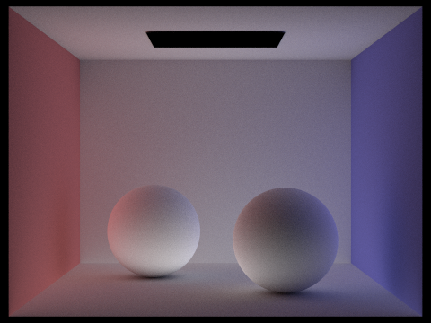
With direct light only, surfaces are lit only where they can see the light. Anything facing away, such as the undersides of the spheres, the ceiling, and the shadowed floor, is black, and shadows have hard black cores. In the indirect image, the light comes from other surfaces instead. The shadows are filled in, the ceiling is lit, and the walls are visibly tinted by their neighbors, with red from the left wall and blue/green from the right wall spilling onto the nearby floor and spheres. The two images add up to the global render above.
The mth Light Bounce
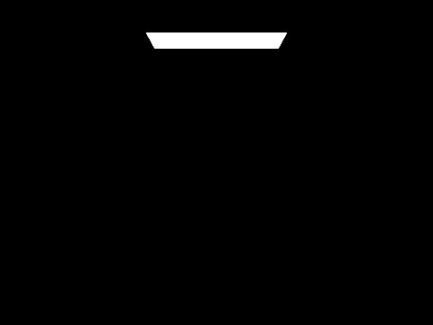
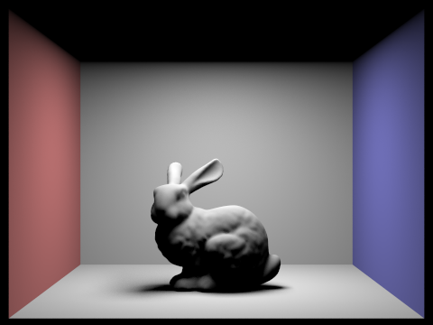
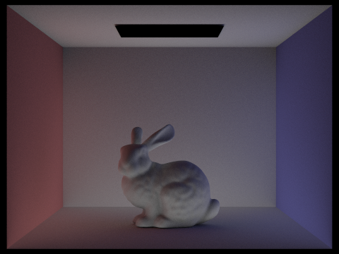
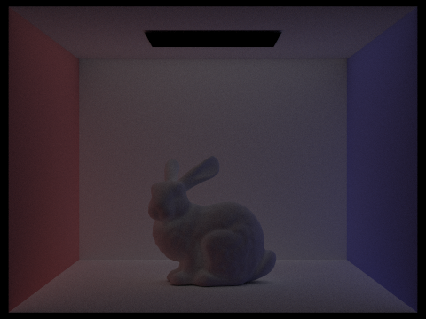
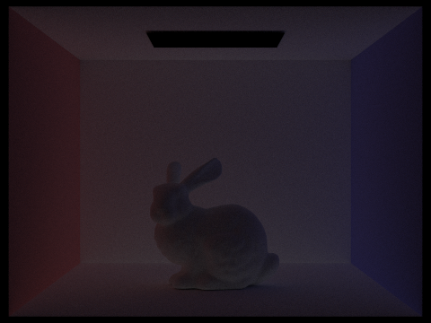
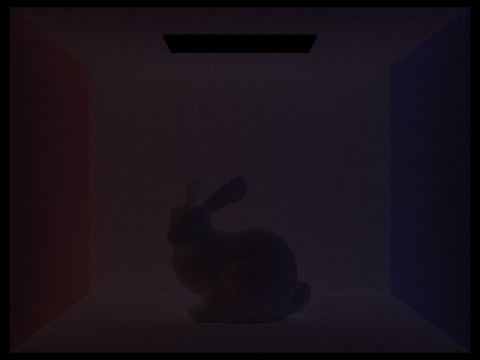
The 2nd bounce is light that went light → surface → surface → camera. It lights regions the direct light cannot reach, including the ceiling, the underside of the bunny, and the inside of the shadows, and it carries color from the walls (the red and blue tints on nearby surfaces). It is much dimmer than the direct light and the image is noisier. The 3rd bounce has the same structure but is dimmer still, smoother, and more evenly spread, since light that has bounced several times has lost directional detail and some energy at each diffuse bounce. Later bounces contribute progressively less, which is why the accumulated image stops changing noticeably after a few bounces. Compared to rasterization, which typically computes only direct lighting at each surface (plus a flat ambient term as an approximation), these bounces provide soft shadows with realistic fill light, color bleeding between nearby surfaces, and a sense that objects sit in a shared environment rather than being lit independently.
Accumulated vs. Unaccumulated Bounces
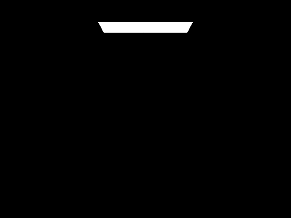
The accumulated images brighten and fill in as m grows, but the change shrinks each step, so by m = 4 or 5 the image is close to convergence. The unaccumulated images show each bounce on its own: they get dimmer and fainter as m increases, which is why the sum converges.
Russian Roulette
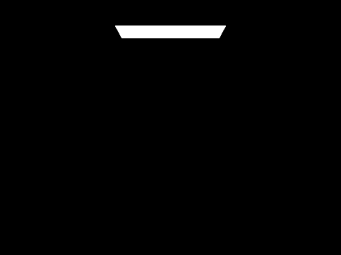
With
max_ray_depth = 100 the render is still fast, because paths terminate randomly after a few bounces on average, yet
the result has the same brightness as the lower-depth renders with accumulated bounces, because the survival-probability weighting
keeps the estimator unbiased. This removes the bias that a fixed depth cutoff creates.
Samples per Pixel (wall-e)
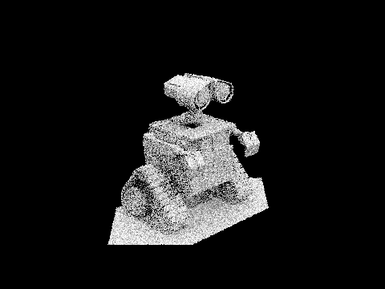
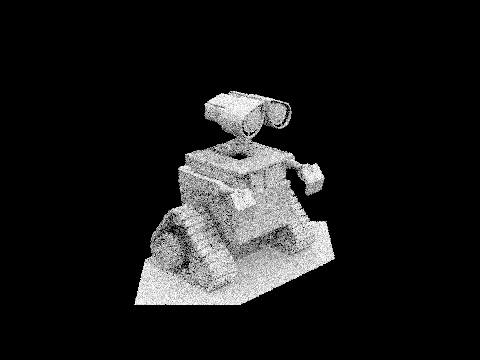
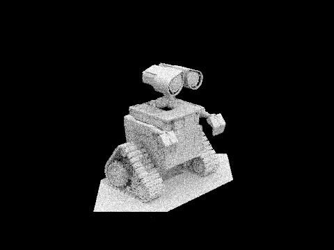
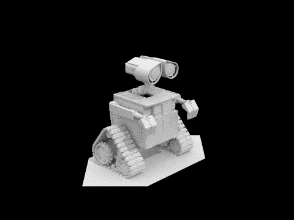
At 1 sample per pixel the image is dominated by noise, since each pixel is a single random path. The noise shrinks as the sample count rises, with the variance falling in proportion to \( \frac{1}{n} \). Going from 1 to 16 samples gives the biggest visible improvement, while the remaining grain at 64 samples takes a large jump (to 1024) to clean up, which shows the diminishing returns of Monte Carlo integration.
Part 5: Adaptive Sampling
A fixed number of samples per pixel wastes computation: pixels in flat or directly lit regions converge after a few samples, while pixels in soft shadows and indirectly lit regions stay noisy for much longer. Adaptive sampling stops tracing a pixel once its estimate has converged, so the sample budget goes to the pixels that need it.In
raytrace_pixel, I trace camera rays one at a time as before, but for each sample I also take its illuminance, \( x_k \)
(Vector3D::illum()) and keep two running sums, \( s_1 = \Sigma x_k \) and \( s_s = \Sigma x_k^2 \) instead of storing individual
sums. After every samplesPerBatch samples, I compute the mean ( \( \mu = \frac{s_1}{n}\) ) and the variance
\( \left( \frac{ s_2 - \frac{s_1^2}{n} }{n - 1} \right) \).
The convergence measure is \( I = 1.96 \times \frac{\sigma}{\sqrt{n}}\), the half-width of a 95% confidence interval on the pixel's mean.
If \( I \le \) maxTolerance \( \times \mu \), the pixel has converged. Otherwise, the algorithm keeps sampling
until it reaches ns_aa. The pixel color is the average over the samples actually taken, and the actual count is written to
sampleCountBuffer, which can be seen in the sampling rate image. Checking only once per batch keeps the cost of the convergence
test low and ensures at least 32 samples before the variance is computed.
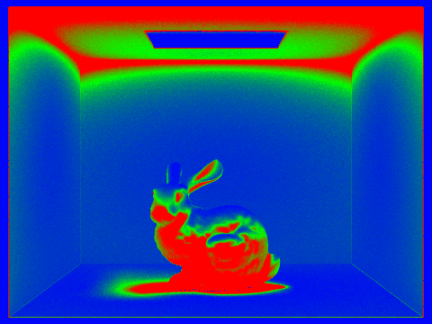
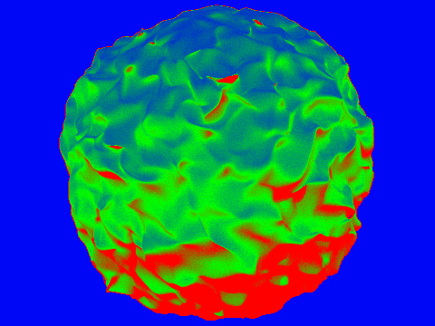
In the sampling-rate images, the walls and the light converge quickly and stay cool, using few samples, while the soft shadows under the objects, the corners, and the object surfaces that are lit mainly by indirect light are warm, taking many more samples. The rendered results are smooth even though most pixels stopped far short of 2048 samples.